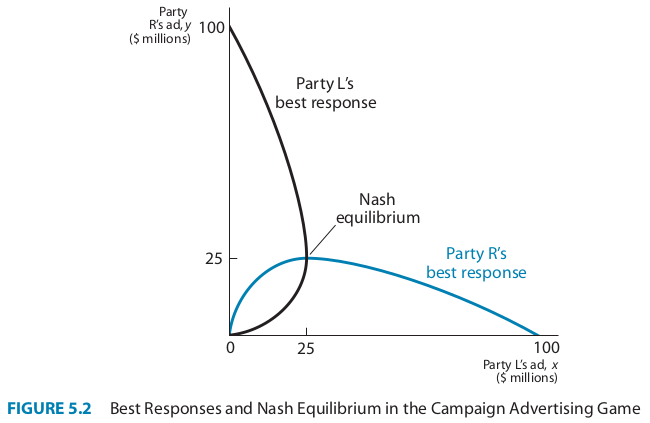

Introduction to Game Theory
Continuous Strategies
2024
Outline
Simultaneous Games with Continous Strategies
Discussing the Strengths and Weaknesses of applying Nash Equilibria
Continuous Strategies
Allowing for an infinite set of possible strategies
So far, in both sequential and simultaneous games, we have restricted the sets of choices available to our players to finite sets.
- Even more complicated games like chess have a countable number of strategies available to a player
- While this can sometimes make it simpler to solve for games with discrete strategies, in other cases it can make more sense to model the choices to players on some continuum
Cases where Continuous Strategies are Useful
- Pricing/bidding/etc in dollar amounts
- Even if there is some minimum unit (like a cent), when there are many options with an obviuous ordering it still makes sense to use continuous values
- Positions in space
- For example, you could choose to place your franchise 1 mile away from your competitors, 100 yards, 1 foot etc.,
Extending Best-Response to Continuous Variables
For our model of price competition, we will extend the method of finding discrete best-response strategies to continuous best-response rules
A best-response rule takes the value of another player’s continuous strategy as an input and returns another continuous value as the best response to that strategy
- this means we can’t use payoff matrices to represent these games anymore,
- instead we will graph these strategies in Cartesian coordinate systems
Setup: Xavier and Yvonne’s Competition
Two restaurants in Yuppie Haven: Xavier’s Tapas Bar and Yvonne’s Bistro.
Each place serves the exact same menu, can only compete based on how much they charge.
This makes this game a good application of continuous strategies because there are many different values which a menu price could take.
Also, each restaurant’s payoff is represented by a continuous payoff function
- In this case, the payoff is the restaurant’s profit which can take on any dollar value and depends on the price and quantity sold by the competing restaurant
Assumptions:
Both set prices simultaneously.
Costs per customer: $8.
Demand depends on both prices:
\(Q_X = 44 - 2P_X + P_Y\)
\(Q_Y = 44 - 2P_Y + P_X\)
Where:
\(Q_X\) is the quantitiy of meals sold and \(P_X\) is the price charged by Xavier
\(Q_Y\) is the quantity sold and \(P_Y\) is the price charged by Yvonne
Notice how each restaurant’s demand depends on thier competitior
Profit Functions
Xavier’s profit is calculated based on his price and number of customers: \[ \begin{align} \pi_X & = (\text{price} - \text{cost})(\textbf{quantity sold}) \\ & = (P_X - 8)\mathbf{(44 - 2P_X + P_Y)} \end{align} \]
Yvonne’s profit follows a similar formula.
How might we derive the best price for each?
Step 1: Expand Xavier’s Profit Function
Let’s expand Xavier’s profit function: \[ \begin{align} \pi_X & = (P_X - 8)(44 - 2P_X + P_Y) \\ & = P_X(44 + P_Y - 2P_X) - 8(44 + P_Y - 2P_X) \end{align} \]
Step 2: Simplify the Expanded Profit Function
Let’s expand Xavier’s profit function: \[ \begin{align} \pi_X & = (P_X - 8)(44 - 2P_X + P_Y) \\ & = P_X(44 + P_Y - 2P_X) - 8(44 + P_Y - 2P_X) \end{align} \]
Now, multiply out the terms:
\[ 44 P_X + P_X P_Y - 2 P_X^2 - 352 - 8 P_Y + 16 P_X \]
What should we do next to find the best price?
Step 3: Deriving Xavier’s Best-Response Function
To find the best price, we differentiate \(\pi_X\) with respect to \(P_X\).
Differentiation:
\[ \frac{d\pi_X}{dP_X} = 44 + P_Y - 4P_X + 16 = P_Y + 60 - 4P_X \]
Set the derivative equal to zero for maximization: \[ P_Y + 60 - 4P_X = 0 \] Solve for \(P_X\): \[ P_X^* = 15 + 0.25P_Y \]
For those without Calculus background
The profit function we wrote out in step 2 seems complicated, so lets simplify it:
\[ \pi_X = - 352 - 8 P_Y + \mathbf{P_X} (60 + P_Y) - 2 \mathbf{P_X}^2 \]
As Xavier, we can only set our own price, \(P_X\), everything else we can just treat as a constant
This fits a more general pattern:
\[ Y = A + BX - CX^2 \]
For those without Calculus background
\[ Y = A + BX - CX^2 \]
If we want to find the maximum of \(Y\) in this equation as a function of \(X\), as long as \(C>0\), this will take the shape of a parabola with a single peak.
- The maxmimum of this function will be reached at:
- \(X^* = \frac{B}{2C}\)
For those without Calculus background
So going back to Xavier’s profit function,
- If \(B = 60 + P_Y\)
- and \(C = 2\)
then applying that the maximum choice will meet \(\frac{B}{2C}\),
we get the same answer of \(P_X^* = 15 + 0.25P_Y\)
Step 4: Yvonne’s Best-Response Function
Yvonne’s problem is symmetric, so we can derive her best-response function similarly: \[ P_Y = 15 + 0.25P_X \]
Question: How do we find the Nash equilibrium from these two best-response functions?
- We have one best response rule for each player as a function of the other player’s pricing strategy
- I.e., a system of two equations and two unknowns
What is a NE in this situation?
Recall that a NE is a stable configuration of strategies in which each player is best responding to the other
- So in this case, when each player is setting a price that maximizes their profits conditional on the other player’s price, there will be no incentive to change price
- In other words, we can plug in one player’s best response rule into the other player’s best response rule to solve for the equilibrium price
Step 5: Solve for Nash Equilibrium
We solve the system of equations for \(P_X\) and \(P_Y\): \[ P_X = 15 + 0.25P_Y \] \[ P_Y = 15 + 0.25P_X \]
Step 5: Solve for Nash Equilibrium
Substitute one equation into the other: \[ P_Y = 15 + 0.25(15 + 0.25P_Y) \] Simplify: \[ P_Y = 15 + 3.75 + 0.0625P_Y \] Solve for \(P_Y\): \[ P_Y = 20 \]
Then, plug \(P_Y = 20\) back into the first equation: \[ P_X = 15 + 0.25(20) = 20 \]
Step 6: Conclusion
At equilibrium:
\(P_X = 20\), \(P_Y = 20\)
Both restaurants charge $20, serve 2,400 customers per month, and make a monthly profit of $28,800.
Recap: Price Competition Breakdown
- Step 1: Expand the profit function.
- Step 2: Simplify the expanded equation.
- Step 3: Differentiate and solve for best-response.
- Step 4: Repeat for Yvonne.
- Step 5: Solve for Nash equilibrium.
Graphically:

Economics of Oligopoly
Competition in the Restaurant Game
In the last example, we found Xavier and Yvonne’s best responses independently of the other’s.
- But could they cooperate to raise prices more than in the NE?
Competition in the Restaurant Game
If both charged $24, then they could each get 2,000 customers:
\[ Q = 44 - 2($24) + 24 = 20 \]
And each would earn a profit of $32,000
\[ \pi = (24 - 8)(20) \]
which is more than the $28,000 they earned in NE
Introduction to Oligopoly
In an oligopoly, a small number of firms (here just two) compete in the same market.
Key Concepts:
- Best-response curves: Show how one firm’s best price depends on the other’s.
- Equilibrium: Each firm maximizes its profit, given the price set by the other firm.
Question: What do you think happens to prices when firms have fewer competitors?
Best-Response Curves: Intuition
When one restaurant raises its price by $1:
The other restaurant’s best response is to raise its own price by $0.25.
They lose some of their customers to their competitor who can reap some extra profit by raising their prices also (as long as they don’t raise it higher than their competitor)
Thus by raising prices, one restaurant is providing a positive externalitiy to their competitor which isn’t priced into the NE profit function
Allowing for cooperation in the Restaurant game
What if Xavier and Yvonne could coordinate their prices by setting them higher than equilibrium at $24?
- Xavier’s best response function \(P_X = 15 + 0.25 P_Y\) tells us that if he knows Yvonne is setting her price at $24, he should lower his price to \(P_X = 21\) to attract more customers away from Yvonne
- So there is always an incentive for either player to cheat the other at this cooperative strategy profile
Allowing for cooperation in the Restaurant game
Does this sound familiar?
This is a continuous version of the Prisoners’ Dilemma we studied earlier:
Each player is incentivized to independently add to their payoff by harming the other
But if they could commit to coordinating, they could both be better off
Optimal Oligopoly pricing in the Restaurant game
If Xavier and Yvonne could form a cartel and jointly set prices for both their restaurants, they should maximize the total payoff function:
\[ \begin{align} \pi_X = \pi_Y & = (P - 8)(44 - 2P + P) \\ & = -352 + 52P - P^2 \end{align} \]
- Using the formula for the profit-maximizing price in this equation:
- \(P^* = 52/2 = 26\)
- The cartel should charge $26 and get $32,400 profit for each firm
Why Does the Best-Response Curve Slope Upwards?
Each firm’s best-response curve slopes upwards because:
When one firm raises its price, the other can raise its price slightly and still maintain some customers.
This is a characteristic of oligopolies where price competition is less intense than in markets with many competitors.
Types of Oligopoly: Cournot vs Bertrand
Our restaurant example had firms choosing prices to compete.
- This type of competition is called Bertrand competition
The other type of competition is where firms choose how much quantity to produce.
- Otherwise known as Cournot competition
Application: Cournot Competition
Let’s see how we can use a game with continuous strategies to model a real-world situation.
In Cournot competition, two firms produce the same product, and face the same market demand curve. The firms simultaneously decide how much product to produce, which they then sell at a price determined by that market demand curve.
This is a game with two players (the firms), and continuous strategies (the firms must pick a quantity to produce, which can be any non-negative real number).
In this example, we will use the following values:
- Market Demand Curve: \(Q = 100 - P\), in which \(Q = q_1 + q_2\)
- Cost Functions: \(c_i(q_i) = 10q_i\)
Cournot Competition: Creating the Payoff Functions
First of all, we need payoff functions for each player.
Since the players are firms, and the goal of a firm is to maximize profit, we’ll use the firms’ profits as their payoffs.
We can construct the profit functions by taking TR - TC, or in this case, Pq - c(q).
Solving for P, we find that \(P = 100 - Q = 100 - q_1 - q_2\).
Cournot Competition: Creating the Payoff Functions
This gives us: \[ \begin{align} \pi_1 &= (100 - q_1 - q_2)q_1 - 10q_1 & \pi_2 &= (100 - q_1 - q_2)q_2 - 10q_2\\ &= 100q_1 - q_1^2 - q_1q_2 - 10q_1 & &= 100q_2 - q_1q_2 - q_2^2 - 10q_2\\ &= 90q_1 - q_1^2 - q_1q_2 & &= 90q_2 - q_1q_2 - q_2^2\\ &= (90 - q_2)q_1 - q_1^2 & &= (90 - q_1)q_2 - q_2^2 \end{align} \]
Cournot Competition: Finding Best-Response Functions
These best-response functions are in the by-now familiar quadratic form. Both of them have negative squared terms, so we can look for a maximum: \[ \begin{align} q_1 &= \frac{-(90 - q_2)}{2(-1)} & q_2 &= \frac{-(90 - q_1)}{2(-1)}\\ &= \frac{90 - q_2}{2} & &= \frac{90 - q_1}{2}\\ &= 45 - \frac{q_2}{2} & &= 45 - \frac{q_1}{2} \end{align} \] —
Cournot Oligopoly: Finding Nash Equilibrium
Solve these best-response rules as a system of equations: \[ \begin{align} q_1 &= 45 - \frac{1}{2}q_2\\ q_2 &= 45 - \frac{1}{2}q_1\\ \implies q_1 &= 45 - \frac{1}{2}(45 - \frac{1}{2}q_1) & q_2 &= 45 - \frac{1}{2}(30)\\ q_1 &= 45 - \frac{45}{2} + \frac{1}{4}q_1 & &= 45 - 15\\ \frac{3}{4}q_1 &= \frac{45}{2} & q_2^* &= \boxed{30}\\ q_1^* &= \boxed{30} \end{align} \]
Another Cournot Example
Crude oil is transported across the globe in enormous tanker ships called Very Large Crude Carriers (VLCCs). By 2001, more than 92% of all new VLCCs were built in South Korea and Japan. Assume that the price of new VLCCs (in millions of dollars) is determined by the function \(P = 180 - Q\), where \(Q = q_{Korea} + q_{Japan}\). (That is, assume that only Japan and Korea produce VLCCs, so they are a duopoly.) Assume that the cost of building each ship is $30 million in both Korea and Japan. That is, \(c_{Korea} = c_{Japan} = 30\), where the per-ship cost is measured in millions of dollars.
Conclusion: The Economics of Oligopoly
In an oligopoly:
Firms’ prices (quantities) are interdependent.
The best-response functions allow us to determine equilibrium prices (or quantities in Bertrand).
Interactive Exercise: Market Dynamics
Let’s extend this:
What happens when a third firm enters the market?
Would prices fall? Would all three firms set similar prices?
Or would competition force one firm out of the market?
Discuss!
Political Campaign Advertising
Setup: Competing with Ads
Two political parties, L and R, are competing in an election by spending money on campaign advertising.
Key Concepts:
- Vote shares depend on each party’s advertising:
- If party L spends \(x\) million dollars and party R spends \(y\) million dollars:
- Party L’s vote share is \(\frac{x}{x + y}\)
- Party R’s vote share is \(\frac{y}{x + y}\)
- If party L spends \(x\) million dollars and party R spends \(y\) million dollars:
Question: How might spending more on ads increase one party’s vote share?
Step 1: Payoffs for Each Party
Each party’s payoff is its vote share minus the cost of its advertising.
- L’s payoff: \[ 100 \times \frac{x}{x + y} - x \]
- R’s payoff: \[ 100 \times \frac{y}{x + y} - y \]
Step 2: Best-Response Functions
To find the best-response functions for each party, we use calculus.
For Party R:
- Differentiate R’s payoff with respect to \(y\): \[ \frac{d}{dy} \left( 100 \times \frac{y}{x + y} - y \right) = 0 \]
- Simplifying: \[ 100 \times \frac{x}{(x + y)^2} = 1 \]
- This gives R’s best-response function: \[ y = 10 \sqrt{x} - x \]
Step 3: Party L’s Best Response
By symmetry, Party L’s best-response function is: \[ x = 10 \sqrt{y} - y \]
Question: How do you think these best-response functions help us find the Nash equilibrium?
Step 4: Solving for Nash Equilibrium
We solve for \(x\) and \(y\) by substituting the best-response functions into each other.
- From \(y = 10 \sqrt{x} - x\), substitute into L’s equation: \[ x = 10 \sqrt{10 \sqrt{x} - x} - (10 \sqrt{x} - x) \] Solve this system to find \(x = y = 25\).
Question: What does this tell us about each party’s optimal spending?
Graphical Representation
Step 5: Interpretation of Results
At equilibrium: - Both parties spend $25 million on ads. - Neither party can improve its vote share by changing its spending.
Discussion:
- In this case, both parties overspend compared to the social optimum. This situation is similar to a prisoner’s dilemma.
Step 6: Socially Optimal Solution
In the prisoner’s dilemma structure, both parties would be better off if they reduced their advertising spending, saving money without losing votes.
Question: Why don’t the parties naturally reduce their spending to reach this optimal outcome?
Asymmetries in Political Advertising
What if one party has an advantage, such as lower advertising costs or more effective ads?
- If Party R’s advertising dollars are twice as effective, its best-response curve shifts upwards, and it spends more than L.
Question: How might this advantage affect the equilibrium?
Conclusion: Political Campaigns as a Game
- Political campaigns can be viewed as strategic games where each party competes for votes through advertising.
- While competition leads to higher spending, the results resemble a prisoner’s dilemma, where both parties might benefit from cooperation.
Interactive Exercise
What if: - There are three competing political parties? - Or one party has access to a significantly larger budget?
Discuss with your peers how this might change the outcome of the advertising game.
Applying Rationalizability
Rationalizability
Recall the concept of never a best response strategies.
All strategies which survive the eliminations of NBR’s are said to be rationalizable.
Applying Rationalizability
Remember this game from before?
| Row, Column | C1 | C2 | C3 |
|---|---|---|---|
| R1 | 0,7 | 2,5 | 7,0 |
| R2 | 5,2 | 3,3 | 5,2 |
| R3 | 7,0 | 2,5 | 0,7 |
- We said that there is a unique NE (R2, C2) which could be justified with one set of beliefs
- But also there was another chain of beliefs which could justify R1
- That’s because R1 is rationalizable
Applying Rationalizability
If we took away R2 and C2 from this game;
| Row, Column | C1 | C3 |
|---|---|---|
| R1 | 0,7 | 7,0 |
| R3 | 7,0 | 0,7 |
then you can see that there is no NE in pure strategies,
but all four strategy profiles are rationalizable
So rationalizability can still be useful even when NE cannot be found
Applying Rationalizability to Continuous Games
There are two fishing boats in a small coastal town
- they can catch as many fish as they want, but too many will flood the local market
- the price of fish in the market is a function of how much each boat catches:
\[ P = 60 - (R + S) \]
+ where $R$ and $S$ are barrels caught for each boat- Unit cost for each barrel is 30 ducats for boat \(R\) and 36 ducats for boat \(S\)
Applying Rationalizability to Continuous Games
The profits of each boat are:
\[ \begin{align} \pi_R = & [(60 - R - S) - 30] \cdot R = (30 - S)R - R^2\\ \pi_S = & [(60 - R - S) - 36] \cdot S = (24 - R)S - S^2 \end{align} \]
Applying Rationalizability to Continuous Games
what are the best-response rules?
\[ \begin{align} \frac{\delta \pi_R}{\delta R} & = (30 - S) - 2R \\ \Rightarrow R^* = 15 - \frac{S}{2} \end{align} \]
\[ \begin{align} \frac{\delta \pi_S}{\delta S} & = (24 - S) - 2S \\ \Rightarrow S^* = 12 - \frac{R}{2} \end{align} \]
Applying Rationalizability to Continuous Games
If you are the captian of boat \(R\),
and you know that boat \(S\)’s best response rule is $S^* = 12 - ,
what values of \(S\) should you plausibly expect them to ever pick?
would they ever choose \(S<0\)?
what about \(S>12\)?
we can then say that only values \(S \in [0,12]\) are rationalizable
What is \(R\)’s range of possible best-responses if \(S \in [0,12]\)?
- \(R^*(S = 0) = 15\), \(R^*(S = 12) = 15 - 6 = 9\)
Applying Rationalizability to Continuous Games
Now if you are the captian of boat \(S\),
and you know that \(R\) knows that you will only choose \(S \in [0,12]\),
What is \(S\)’s range of possible best-responses if \(R \in [9,15]\)?
- \(S^*(R = 9) = 12 - \frac{9}{2} = \frac{15}{2}\), \(R^*(S = 15) = 12 - \frac{15}{2} = \frac{9}{2}\)
Applying Rationalizability to Continuous Games

Iteratively applying this logic of eliminating ranges of non-rationalizable strategies will converge on the unique NE:
(\(R = 12\), \(S = 6\))
this is also where the best-response rules intersect

EC327 | Lecture 4 | Continuous Strategies